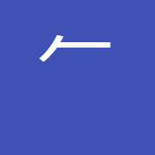

Particles¶
85/85 keywords reviewed
100%
儿 human legs
p001¶
View on: jisho.org | wanikani.com
亠 top hat
p002¶
View on: jisho.org | wanikani.com
ト wand
p003¶
View on: jisho.org | wanikani.com

gun
p004¶
Custom image particle, no dictionary lookup available.
㇇ gasp
p005¶
View on: jisho.org | wanikani.com
丿 slash
p006¶
View on: jisho.org | wanikani.com
丶 drop
p007¶
View on: jisho.org | wanikani.com
乚 hook
p008¶
View on: jisho.org | wanikani.com
氵 water
p009¶
View on: jisho.org | wanikani.com
冫 ice
p010¶
View on: jisho.org | wanikani.com
丬 icicle
p011¶
Variant
爿
Particles
None
View on: jisho.org | wanikani.com
灬 fire
p012¶
View on: jisho.org | wanikani.com
气 air
p013¶
View on: jisho.org | wanikani.com
囗 enclosure
p014¶
View on: jisho.org | wanikani.com
メ treasure
p015¶
View on: jisho.org | wanikani.com
彳 flash
p016¶
View on: jisho.org | wanikani.com
亍 stepping foot
p017¶
View on: jisho.org | wanikani.com
忄 feeling
p018¶
View on: jisho.org | wanikani.com
丨 stick
p019¶
Variant
None
Particles
None
View on: jisho.org | wanikani.com
凵 box
p020¶
View on: jisho.org | wanikani.com
冂 hood
p021¶
View on: jisho.org | wanikani.com
冋 mustache
p022¶
View on: jisho.org | wanikani.com
匚 cage
p023¶
Variant
None
Particles
None
View on: jisho.org | wanikani.com
几 table
p024¶
Variant
None
Particles
None
View on: jisho.org | wanikani.com
勹 wrap
p025¶
View on: jisho.org | wanikani.com
seal
p026¶
Custom image particle, no dictionary lookup available.
厂 cliff
p027¶
View on: jisho.org | wanikani.com
冖 cover
p028¶
Variant
None
Particles
None
View on: jisho.org | wanikani.com
schoolhouse
p029¶
Custom image particle, no dictionary lookup available.
𠆢 roof
p030¶
View on: jisho.org | wanikani.com
宀 house
p031¶
View on: jisho.org | wanikani.com
圭 ivy
p032¶
View on: jisho.org | wanikani.com
tremor
p033¶
Custom image particle, no dictionary lookup available.
厶 nose
p034¶
View on: jisho.org | wanikani.com
smushed nose
p035¶
Custom image particle, no dictionary lookup available.
マ magic
p036¶
View on: jisho.org | wanikani.com
礻 altar
p037¶
View on: jisho.org | wanikani.com
衤 garment
p038¶
Variant
衣
Particles
None
View on: jisho.org | wanikani.com
by one's side
p039¶
Custom image particle, no dictionary lookup available.
⻌ road
p040¶
View on: jisho.org | wanikani.com
eel
p041¶
Custom image particle, no dictionary lookup available.
亲 spice tree
p042¶
View on: jisho.org | wanikani.com
聿 brush
p043¶
View on: jisho.org | wanikani.com
ヨ broom
p044¶
View on: jisho.org | wanikani.com
攵 chair shot
p045¶
Think WWE folding chair shot
View on: jisho.org | wanikani.com
艹 flowers
p046¶
View on: jisho.org | wanikani.com
䒑 horns
p047¶
View on: jisho.org | wanikani.com
匕 spoon
p048¶
View on: jisho.org | wanikani.com
犭 animal
p049¶
View on: jisho.org | wanikani.com
豕 pig
p050¶
View on: jisho.org | wanikani.com
也 alligator
p051¶
View on: jisho.org | wanikani.com
㠯 bear
p052¶
View on: jisho.org | wanikani.com
彡 hair
p053¶
View on: jisho.org | wanikani.com
apron
p054¶
Custom image particle, no dictionary lookup available.
艮 root
p055¶
View on: jisho.org | wanikani.com
𧘇 skirt
p056¶
View on: jisho.org | wanikani.com
扌 fingers
p057¶
View on: jisho.org | wanikani.com
卬 cat pirate
p058¶
View on: jisho.org | wanikani.com
隹 turkey
p059¶
View on: jisho.org | wanikani.com
罒 net
p060¶
View on: jisho.org | wanikani.com
歹 remains
p061¶
View on: jisho.org | wanikani.com
夂 winter
p062¶
View on: jisho.org | wanikani.com
幺 spiderman
p063¶
View on: jisho.org | wanikani.com
尸 butt
p064¶
View on: jisho.org | wanikani.com
廾 two hands
p065¶
View on: jisho.org | wanikani.com
廴 yoga
p066¶
Variant
None
Particles
None
View on: jisho.org | wanikani.com
⻖← wall
p067¶
View on: jisho.org | wanikani.com
→⻏ hometown
p068¶
View on: jisho.org | wanikani.com
咅 hellmouth
p069¶
View on: jisho.org | wanikani.com
弋 ceremony
p070¶
View on: jisho.org | wanikani.com
戈 spear
p071¶
View on: jisho.org | wanikani.com
戊 double-edged spear
p072¶
View on: jisho.org | wanikani.com
乍 key
p073¶
View on: jisho.org | wanikani.com
毌 mother
p074¶
View on: jisho.org | wanikani.com
殳 weapon
p075¶
View on: jisho.org | wanikani.com
疋 bolt of cloth
p076¶
Variant
⺪
Particles
None
View on: jisho.org | wanikani.com
疒 sick
p077¶
Variant
None
Particles
None
View on: jisho.org | wanikani.com
癶 tent
p078¶
View on: jisho.org | wanikani.com
禾 grain
p079¶
View on: jisho.org | wanikani.com
而 rake
p080¶
Variant
None
Particles
None
View on: jisho.org | wanikani.com
⺮ bamboo
p081¶
View on: jisho.org | wanikani.com
spikes
p082¶
Custom image particle, no dictionary lookup available.
虍 tiger
p083¶
View on: jisho.org | wanikani.com
覀 helicopter
p084¶
View on: jisho.org | wanikani.com
啇 old wizard
p085¶
Variant
None
Particles
None
View on: jisho.org | wanikani.com